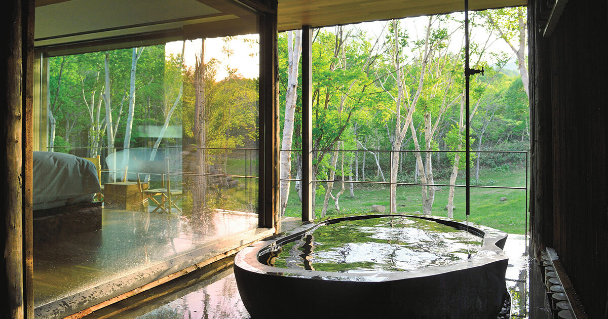
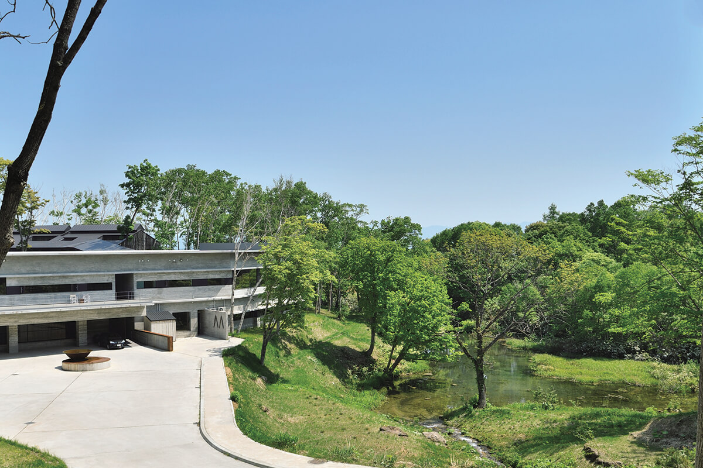
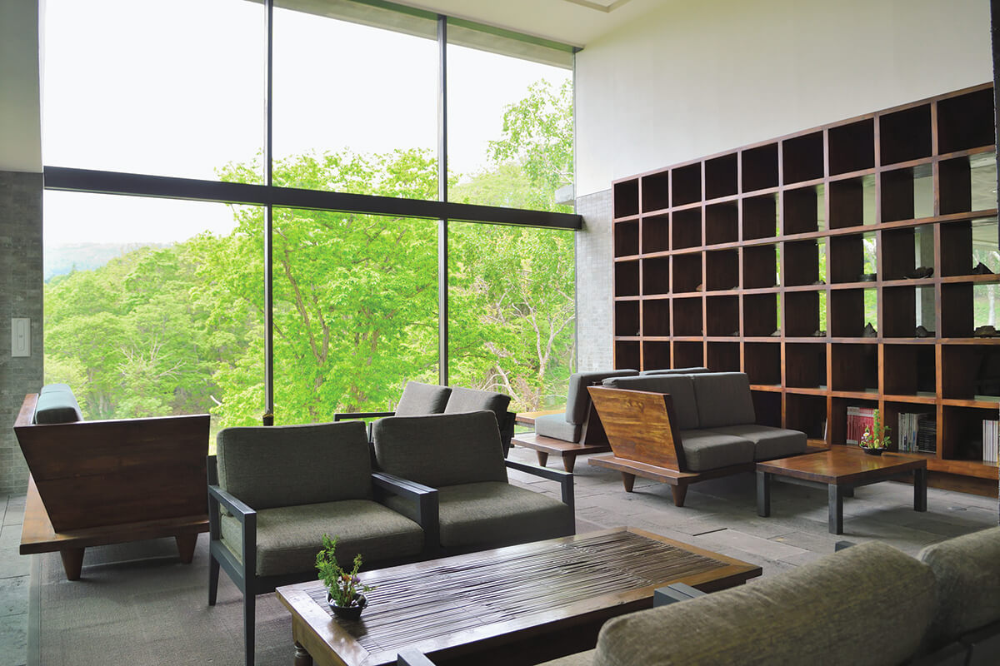
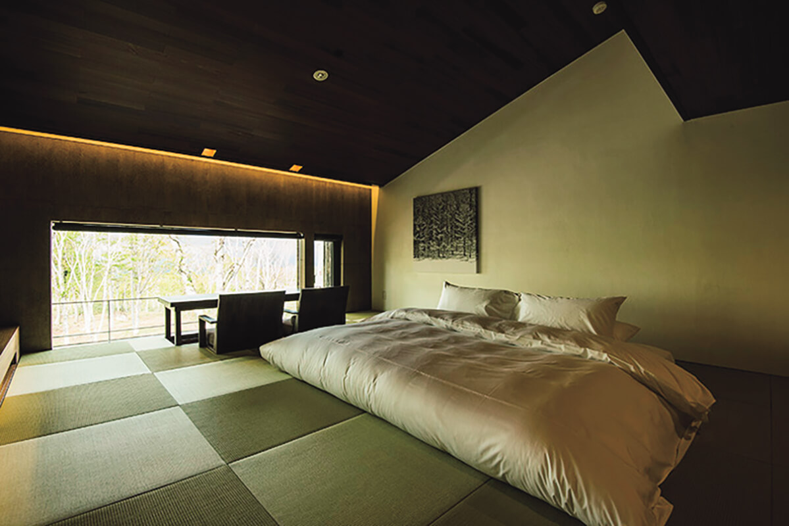
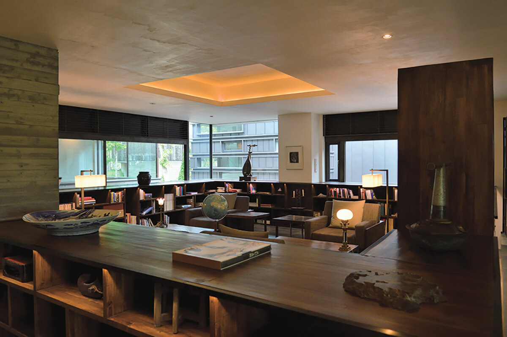
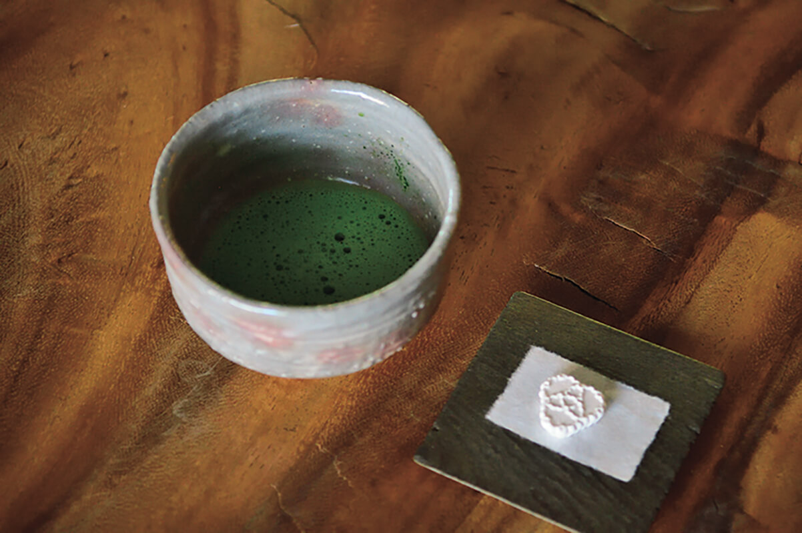
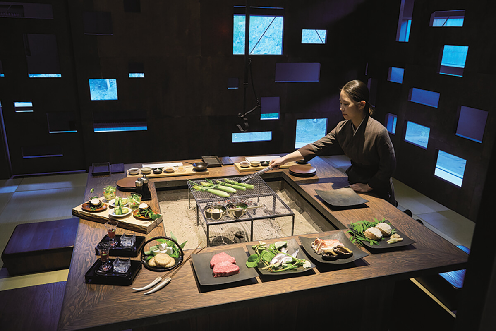

Префектура Хоккайдо · Нисэко · рёкан
Zaborin: рёкан в лесу Нисэко, где учатся ни о чём не думать

В лесу между горой Йотэй и Нисэко-Аннупури прячется рёкан на пятнадцать номеров, куда едут гости со всего мира. Его название обещает простую вещь: здесь можно на время перестать думать.
Место
Укрытие в старом лесу
«Дзабо» это буддийский термин: сидеть в покое, забыть о мире перед глазами и отпустить посторонние мысли. Рёкан Zaborin, «Лес дзабо», носит это слово в имени. В 2019 году он работал всего третий год, а его уже называли одним из лучших рёканов Японии.
Рёкан стоит на территории квазинационального парка Нисэко-Сякотан-Отару-Кайган. Вокруг старый лес, а над ним поднимаются величественная гора Йотэй и Нисэко-Аннупури. Здание прячется среди деревьев так, будто его специально укрыли от посторонних глаз.

Снаружи это стильная постройка в западном духе. Но стоит войти, и на каждом шагу видна японская традиция. Свет и тень распределены так тонко, как когда-то в старых японских домах, в духе эстетики «Похвалы тени». Получился простой и современный рёкан, каким он, возможно, станет в будущем.
Вокруг растут берёзы, монгольский дуб, клёны, ели, а по склонам стелется низкий бамбук. Этот лес признан участком, ценным для сохранения природного разнообразия. Прямо на участке бьёт горячий источник, и в каждом номере сделана своя ванна, куда вода идёт без перерыва, напрямую из источника.

Делать здесь ничего не обязательно. Хозяева рёкана хотят, чтобы гости просто отдохнули душой и телом, попробовали дары северной земли по сезону и провели время спокойно. Особое место дало начало особому рёкану, и работают в нём люди, которые относятся к делу всерьёз.
Рёкан
Пространство со своим характером
В конце весны снег лежит здесь лишь местами. Дорога идёт мимо огромной горы Йотэй и Нисэко-Аннупури, через березняк с первыми листьями, а потом поднимается в горы. Хотя кругом лес, формально рёкан относится к посёлку Куттян. Zaborin тихо стоит в уголке старого леса.
Участок занимает 40 000 квадратных метров, а номеров всего 15. Снаружи здание похоже на небольшой роскошный отель, но внутри это рёкан, где гостей принимают по-японски.

В здание подведена вода собственного источника «Дзаборин-онсэн». И ванны в номерах, и купальни под открытым небом наполняются ею без перерыва. Вода богата метакремниевой кислотой и минералами. Лежишь в ванне, слушаешь птиц из тихого леса, и усталость от повседневной жизни куда-то уходит.
Все номера это люксы площадью от 70 до 86 квадратных метров. Даже их названия продуманы: каждый назван по рисунку снежинки, например «Прекрасный снег» или «Внешнее снежное кольцо». Кто бы мог подумать, что у снежинок бывает столько форм.
Номеров мало, зато общим пространствам отдано много места. Ресторан Zaborin разделён на отдельные кабинеты, чтобы никто не мешал друг другу. В библиотеке тихо. Есть гостиная с камином и высоким потолком и стильный бар с винным погребом, где для охлаждения используют родниковую воду.

К бару и гостиной примыкает чайная комната с маленьким внутренним садом. Здесь можно спокойно прожить и неделю. Сердце рёкана это бар в центре здания: его стойка сделана из цельного ствола длиной 11 метров. В ясный день лучшие места именно за этой стойкой, с видом на горы.

Не пропустите ясный вечер. Гора Йотэй на закате меняет цвет каждую минуту, и от этой почти щемящей красоты замолкают все.
Кухня
Северный кайсэки и «охотник за травами»
Пространство здесь роскошное и задумано по-своему, но главное в другом: персонал заботится о гостях не по инструкции, а от души. Молодой шеф с сильным характером придумал собственный вариант кайсэки и назвал его «Кита-кайсэки», северным кайсэки.

Среди сотрудников есть мужчина, который ушёл на пенсию с прежней работы и взял на себя самые разные дела. Его прозвали «охотником за горными травами». С весны до начала лета горы полны сезонных даров, и он уходит в знакомые места за редкими дикоросами. Шеф готовит из этих утренних сборов блюда, и свежие травы с гор в тот же день попадают на стол гостей.
Тёплый рёкан, где многое сделано своими руками, окружён красивой природой северной земли. Кажется, отсюда могут начаться и новые истории путешествий, не только кулинарные. Что ещё делать в Нисэко летом, рассказывает отдельная статья.
Zaborin
- Адрес
- префектура Хоккайдо, уезд Абута, Куттян, Ханадзоно, 76-4
- Телефон
- +81 136-23-0003
- Номера
- 15
- Цены / Вход
- от 75 000 иен с человека при размещении вдвоём, с ужином и завтраком, с налогом и сервисным сбором
- Заезд / выезд
- 14:00 / 11:00
- Как добраться
- на машине около 2 часов от аэропорта Нью-Титосэ; от станции JR Куттян около 10 минут на бесплатном шаттле (по записи)
- Сайт
- zaborin.com
Фото: Ацуси Ямахира, Мидзуаки Вакахара.